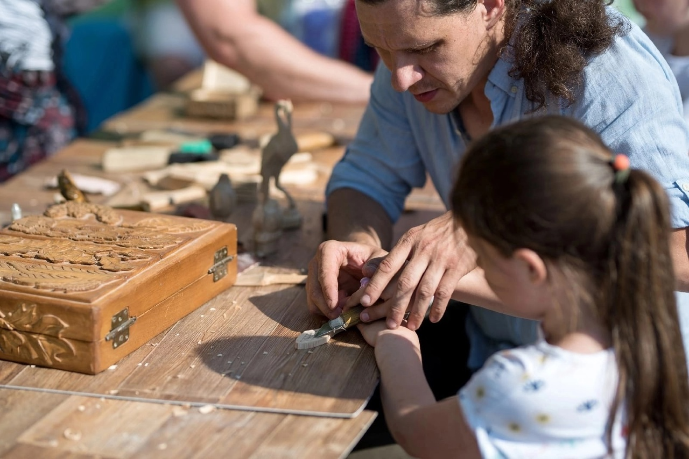
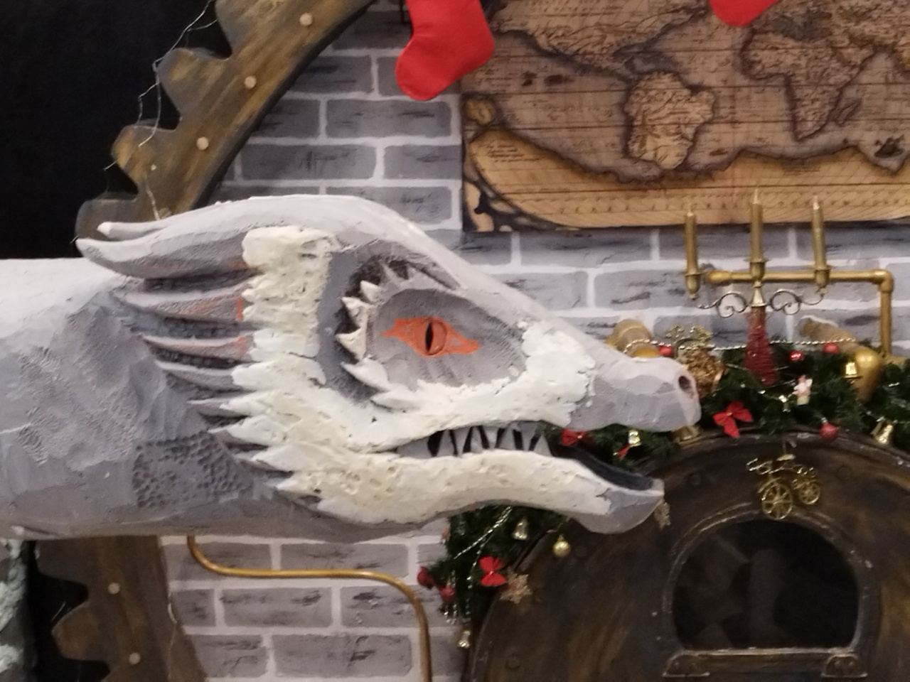
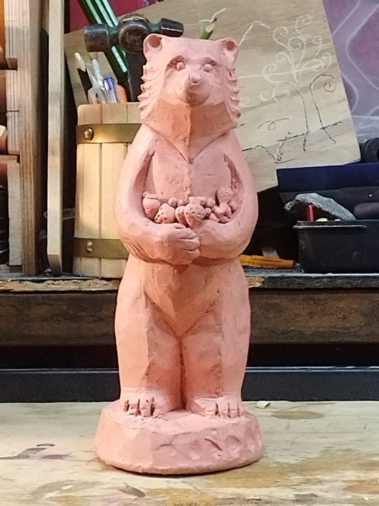

До курса у Ивана Мурзенко, из Сурпухова, было хобби, которое не приносило дохода. Он занимался резьбой по дереву, кузнечным делом и вёл школу резьбы. После прохождения курса "ВК Бабло" Дмитрий смог систематизировать ведение групп в соцсетях и привлечь больше клиентов.
Сейчас его школа резьбы приносит от 30 до 60 тыс. рублей в месяц при занятости всего 8 часов в неделю. За последний год доход составил около 400 000 рублей. Прилетел крупный заказ на создание восьми парковых скульптур для соседнего города, на сумму 1 320 000 рублей.
— Расскажи, что было до курса, какой средний доход был в месяц? Сколько клиентов?
— Тут сложно сказать, до курса я можно сказать на хобби и не зарабатывал, более того, за время после обучения я сменил несколько направлений: была резьба по дереву на заказ, кузница, школа резьбы, которая собственно и начала приносить мне стабильный доход, в среднем от 20 до 60 тыс в месяц. Помимо моих проектов есть еще проекты супруги: фотостудия, фотография, аренда нарядов и арт-пространство. Собственно во всех этих проектах группы выстроены по алгоритму "вк бабло”.
Ранее мы с супругой вели группы по фотографии в инсте и вк, много сил времени и денег тратили на офлайн тематические выставки, клиенты были. Нельзя сказать что после курса все стало легко и просто и клиенты пошли валом. Это работает, когда сам работаешь, само ничего не получится.
— Согласна. Волшебных кнопок нет. Какие сложности были во время обучения на нашем курсе? Насколько сложно было учиться? За сколько прошел курс?
— Да сложностей особых не было. Всё понятно, разжёвано, расписано, по кнопочкам показано. Сложность в рекламе. Но, тут скорее блок у меня в голове. Короче, жму я денег на рекламу.
Сколько по времени проходил, не помню, но помню, что успел в оговорённый срок и даже получил книжечку от суровых.
— Каково было работать с куратором, что было полезно, мотивировало ли это тебя? Как считаешь, без куратора получилось бы так же?
— Куратор, безусловно, помогает, мотивирует, Всегда можно спросить совета. То есть, в целом, я считаю, что это очень полезно. Ну, я так думаю, что сильно зависит от конкретного человека, кто куратор, у меня была Лена, я думаю, что мне с ней очень повезло. По поводу куратора еще, куратор – это как учитель в школе, задача которого тащить тебя за уши, напоминать о домашках и т.д. без куратора большая вероятность забить на обучение.
— Какие сейчас действия делаешь для привлечения клиентов? Как часто пишешь посты? Запускаешь ли рекламу?

— Рекламой не пользовался ни разу, только в процессе обучения, но что-то оно мне не зашло. Я говорю, в голове сидит жаба и жмет денег на эксперименты с рекламой)
Посты пишу очень редко, но, как правило, посты имеют довольно большой отклик. Контент достаточно интересен. И заметил тенденцию, что достаточно написать 2-3 цепляющих поста, чтобы пришел новый ученик.
— А можешь поделиться, как изменилась жизнь, когда увеличился доход? Может что-то купил себе? Съездил в путешествие? Что-то смог сделать, чего раньше не мог позволить себе)
— Не могу сказать что как-то сильно изменился уровень жизни, но причина скорее всего в том, что сейчас строю дом, и все что можно идет туда, ну и забрезжила надежда машинку обновить, моя уже 11 раз вокруг экватора объехала.
В связи с последним мощным заказом купил кучу дорогущего инструмента, который точно не позволил бы себе просто так.

— Можешь сказать, сколько сейчас зарабатываешь? Сколько в среднем в месяц? Сколько клиентов? А вот примерно сколько за год было прошедший заработано?
— Сейчас на школе резьбы зарабатываю 30-60 тысяч в месяц, в зависимости от месяца (летом поменьше, т.к. каникулы у детей). Это при занятости 8 часов в неделю. У меня в среднем около 20 активных учеников, хотя записано больше 30, но у многих с посещаемостью не хорошо.
За год не подсчитывал, но думаю в районе 400000-500000 выйдет.
— Расскажи про последний большой заказ на 1 320 000 рублей – откуда пришел клиент, как о тебе узнал, почему тебя выбрал?)
— В начале лета обратились ко мне из администрации соседнего города, с предложением сделать 8 парковых скульптур, для городского парка. Нашли меня по рекомендации от старой знакомой, с которой мы начали плотное сотрудничество тоже с резьбы по дереву, я для ее театра пару лет назад делал марионетку.
В городе где предполагается этот парк, я сам учился резьбе, и мастера там есть очень хорошие, почему выбрали меня не знал пока не пообщался со своим учителем. Оказывается и ему предлагали, но он отказался, так что, видимо, сыграло свою роль, малое количество мастеров, которые готовы взять такую ответственность.

На самом деле такой заказ был и для меня неожиданным, не рассчитывал на шестизначную сумму, А потом мне прислали они пример коммерческого предложения от их застройщика на 50 лямов и я понял, что зря туплю)))
Короче этот заказ очень мне помогает, т.к. контент связанный с ним очень интересный и масштабный. Не так часто люди онлайн видят как вырезаются действительно масштабные скульптуры.
И это же круто, что к этому самому скульптору можно отдать ребенка учиться резьбе. Люди обращаются в ВК и подходят когда видят как я режу, в общем интерес это вызывает очень большой. Очень хочу еще и тв местное привлечь, когда уже будет что показать. Короче хайпануть можно по полной.
Да и в бизнес этот войти заманчиво, парковые скульптуры не дешёвые.
— Иван, спасибо тебе за ответы! Желаю дальнейшего роста твоей школе и тебе стать знаменитым мастером парковых скульптур!
Вот так, вера в себя и знание маркетинга помогают выходить на другой уровень. Согласен?
— 100%, одно цепляется за другое)